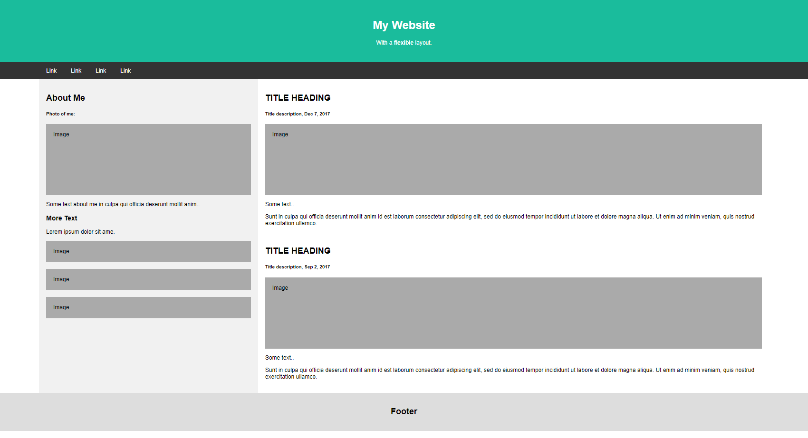
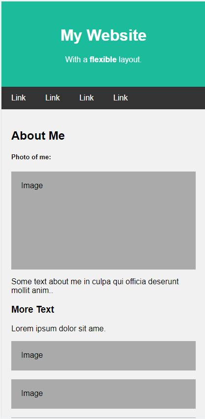

CSS Icons
CSS Icons are used to add icons for making the design more clear and improved to the users.
Some of the icons library
- font-awesome
- materialize-icons
- bootstrap-icons
- flaticons
Usage
First, the icon library should be imported in the webpage.
<i class="fa fa-plus"></i> is used to include a plus icon from fontawesome whereever required.
<i class="bi bi-at"></i> is used to add an @ icon using bootstrap icons.
CSS Flexbox
CSS Flexbox is used to create flexible responsive design/layout without using float or positioning.
An element is defined as a flexbox using display property and setting its value to flex and will be declared as the parent flex container.
Example:
.flex-container { display: flex; }
Flex Container Properties:
- flex-direction
- flex-wrap
- flex-flow (shorthand for flex-direction & flex-wrap)
- justify-content
- align-items
- align-content
flex-direction property
This property defines in which direction the flex items are stacked in the container.
Values: row, row-reverse, column, column-reverse
flex-wrap property
This property is used to define whether to wrap flex items or not if the flex items size is larger than the container.
Values: wrap, wrap-reverse, nowrap
flex-flow property
This property is used as shorthand to define flex-direction and flex-wrap in a single property.
Example: .flex-container { flex-flow: row nowrap; }
justify-content property
This property is used to align the items in the main axis (horizontally).
Values: center, flex-start, flex-end, space-around, space-between
align-items property
This property is used to align the single line items in the cross axis (vertically).
Values: center, flex-start, flex-end, stretch
align-content property
This property is used to align the multi line items in the cross axis (vertically).
Values: center, flex-start, flex-end, stretch, space-between, space-around
Flexbox Items
The direct child elements of a parent displayed as flex are automatically set as flexible and can support flex item properties in them.
Flex Items Properties
- order
- flex-grow
- flex-shrink
- flex-basis
- flex
- align-self
order Property
order property is used to specify the order of flex items. The order value must be a number.
flex-grow Property
flex-grow property is used to specify how much a flex item will grow/expand relative to other flex items. The value of flex-grow must be a number.
flex-shrink Property
flex-shrink property is used to specify how much a flex item will shrink relative to other flex items. The value of flex-shrink must be a number.
flex-basis Property
flex-basis property is used to specify the initial length of a flex item. Can be used as width of flex item.
flex Property
flex property is used as shorthand property to define flex-grow, flex-shrink and flex-basis properties in a single property.
Exercise
Create a responsive website layout like below:
 